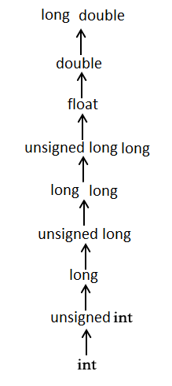

C Öğreticisi 23(Tip Dökümü)
Bu yazılar https://www.tutorialspoint.com/cprogramming/ adresindeki yazı dizilerinin çevirileridir.
Bir veri tipini diğerine dönüştürmek tip dökümü veya tip dönüşümü olarak bilinir. Örneğin, ‘long’ bir değeri basit bir tamsayıda saklamak istiyorsanız, ‘long’ — ‘int’ karakterini yazabilirsiniz. Döküm operatörünü kullanarak değerleri bir türden diğerine açıkça dönüştürebilirsiniz -
(tip adı) ifade
Döküm operatörünün bir integer değişkeninin diğerine bölünmesinin float işlemi olarak gerçekleştirilmesine neden olduğu aşağıdaki örneği düşünün -
#include
main() {
int toplam = 17, sayiSayaci = 5;
double ortalama;
ortalama = (double) toplam / sayiSayaci;
printf(“ortalamanin degeri : %f\n”, ortalama );
}
Yukarıdaki kod derlenip çalıştırıldığında -
ortalamanin degeri : 3.400000
Burada, döküm operatörünün bölünmeye göre önceliğe sahip olduğu belirtilmelidir, bu nedenle toplamın değeri önce double’a dönüştürülür ve son olarak double değer vererek sayıya bölünür.
Tür dönüşümleri, derleyici tarafından otomatik olarak gerçekleştirilen örtük olabilir veya döküm operatörünün kullanımı ile açıkça belirtilebilir. Tür dönüşümleri gerektiğinde döküm operatörünün kullanılması iyi bir programlama uygulaması olarak kabul edilir.
Tamsayı(integer) Tanıtımı
Tamsayı tanıtımı int veya unsigned int’ten “küçük” tamsayı türlerinin değerlerinin int veya unsigned int’e dönüştürülme işlemidir.
Tamsayı içeren bir karakter ekleme örneğini ele alalım -
#include
main() {
int i = 17;
char c = ‘c’; /* ascii değeri 99 */
int toplam;
toplam = i + c;
printf(“toplamin degeri : %d\n”, toplam );
}
Yukarıdaki kod derlenip çalıştırıldığında -
toplamin degeri : 116
Burada, toplam değeri 116'dır çünkü derleyici tamsayı tanıtımı yapar ve ‘c’ değerini ASCII’ye gerçek toplama işlemini gerçekleştirmeden önce dönüştürür.
Alışıldık Aritmetik Dönüşüm
Her zamanki aritmetik dönüşümler, değerlerini ortak bir türe dönüştürmek için dolaylı olarak gerçekleştirilir. Derleyici ilk önce tamsayı tanıtımını yapar; işlenenler hala farklı türlere sahipse, aşağıdaki hiyerarşide en yüksek görünen türe dönüştürülürler -
Alışıldık aritmetik dönüşümler, atama işleçleri veya mantıksal işleçler && ve || için gerçekleştirilmez. Kavramı anlamak için aşağıdaki örneği alalım -
#include
main() {
int i = 17;
char c = ‘c’; /* ascii değeri 99 */
float toplam;
toplam = i + c;
printf(“toplamin degeri : %f\n”, toplam );
}
Yukarıdaki kod derlendiğinde ve çalıştırıldığında, aşağıdaki sonucu verir -
toplamin degeri : 116.000000
Burada, ilk c’nin tamsayıya dönüştürüldüğünü anlamak kolaydır, ancak son değer iki katına çıktığında, normal aritmetik dönüşüm uygulanır ve derleyici i ve c’yi ‘float’a dönüştürür ve ’float‘ sonucu verir.
https://www.tutorialspoint.com/cprogramming/c_type_casting.htm